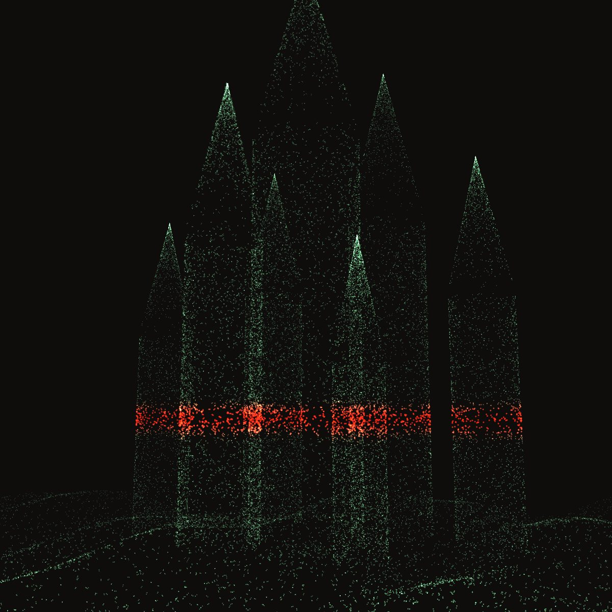
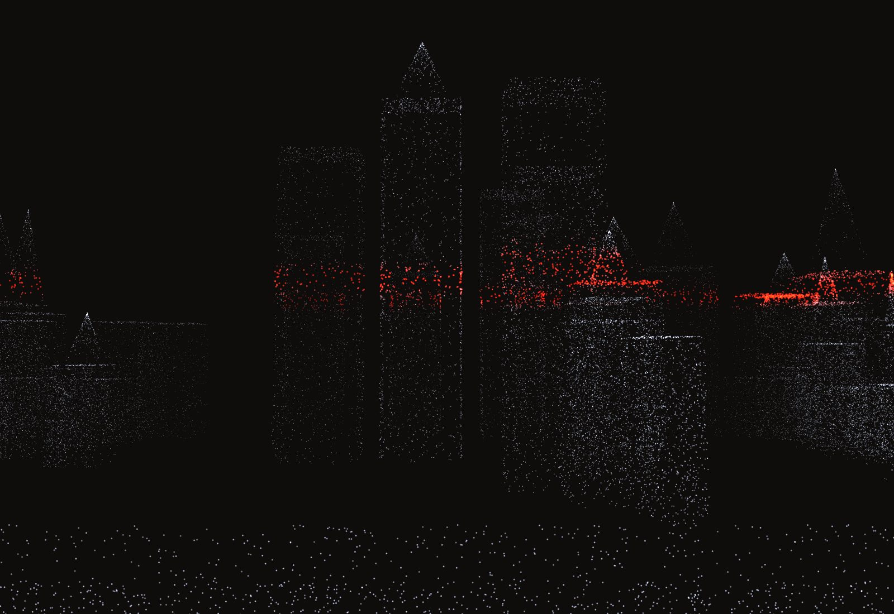
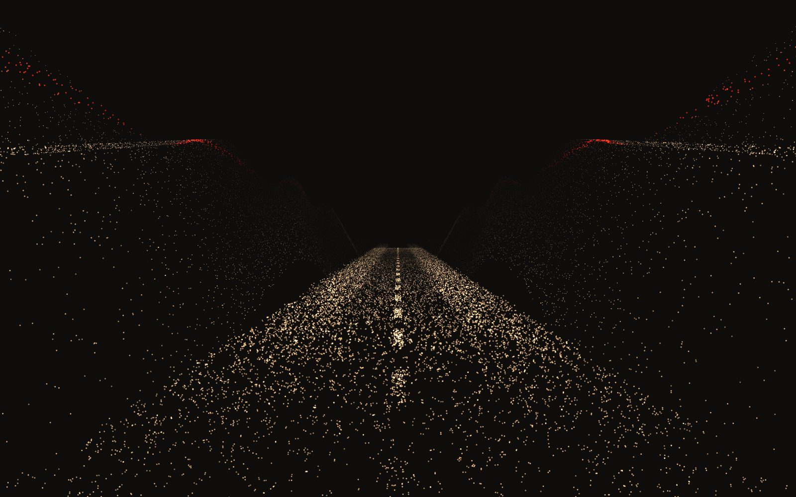

Story
From spark on student shorts to scanning The Batman to leading a VFX data team. Every step earned on set.
VFX data & LiDAR capture
Every set, captured point by point
Scroll to fly through the scans
2022 · Lidar Lounge
The Batman
Scanning technician
2024 to 2025 · NBCUniversal
Wicked and Wicked: For Good
VFX data wrangler
2022 to 2025
Jurassic World Dominion and Rebirth
Environment capture, then data wrangling
2019 to 2023
Hobbs & Shaw and Fast X
LiDAR scanning, then second-unit data wrangling
London
VFX data wrangler and LiDAR capture specialist. 13 feature films, 4 series.
Lead data wrangler on Practical Magic 2, 2026
Camera data, HDRIs and LiDAR scans that VFX vendors build on. For NBCUniversal, Netflix and Wētā FX.
17 productions, delivered to the pipelines of ILM, Wētā FX, DNEG and Framestore. Open a line to see every credit.

2019
2020
2021
2022
2023
2024
2025
2026
Four years at Lidar Lounge, London. Lead capture from 2021.

What she brings to a VFX unit, and the camera systems her data has tracked.
13
feature films
4
series
8 years
in visual effects
9
productions as data wrangler

Story
From spark on student shorts to scanning The Batman to leading a VFX data team. Every step earned on set.